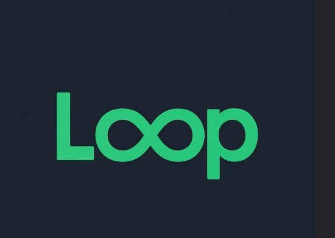
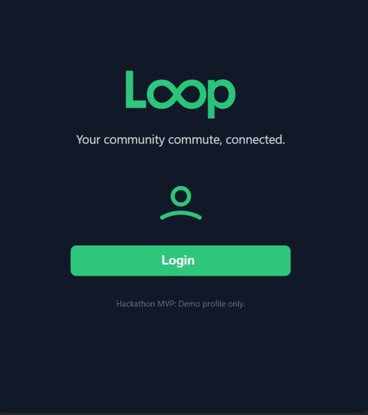
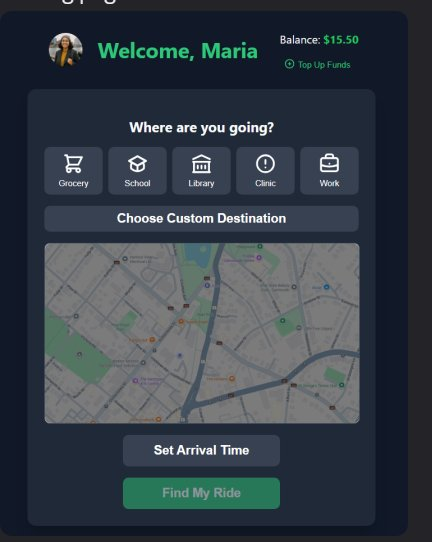
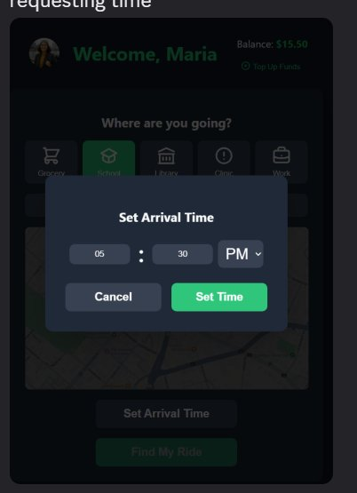
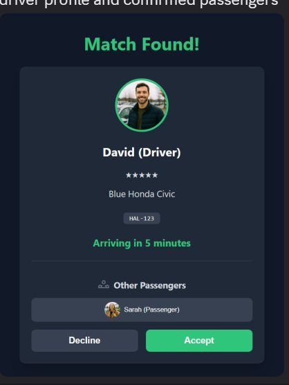
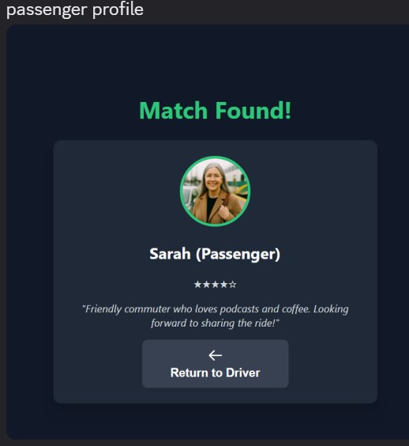
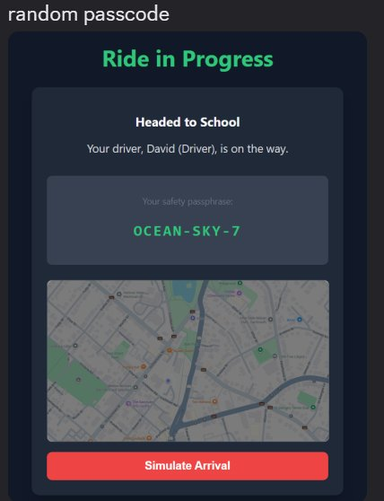
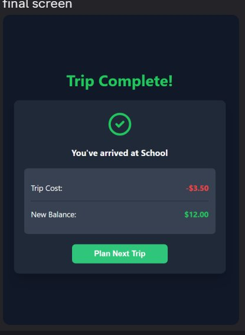

LOOP is a community-powered shared-ride platform tackling transportation poverty in Halifax. Built during a hackathon, it connects riders who need affordable, reliable transportation with drivers already making similar journeys — turning empty car seats into pathways to opportunity.
In Halifax, rapid population growth has outpaced transportation infrastructure. The result is a mobility crisis that hits hardest in low-income communities — where unreliable transit, long commutes, and the prohibitive cost of car ownership create an invisible barrier to economic opportunity.
75–81.5% of Halifax commuters drive to work. Traffic congestion increased 30% above free-flow in 2024, with 28 severely congested days between August and October — up from just 6 in 2019.
Transit commuters face an average 44-minute commute versus 25 minutes by car. This time penalty falls disproportionately on low-income residents who depend on public transit for essential travel.
Spryfield, Dartmouth North, and Preston face significant service gaps. Suspended express routes (41, 78, 179) have stranded communities that were already underserved — creating "dynamic transit deserts."
Car ownership costs exceed $5,270/year before financing. For households below $49,000 income, that consumes over 10% of gross income — forcing an impossible choice between money and time.
LOOP isn't for everyone — it's for people whose lives run on routines. Same workplace, same school drop-off, same clinic appointment every Tuesday. If you're already making that trip, LOOP turns your empty seats into community impact.
You care about the environment and want to reduce your carbon footprint — but you also want to offset some of the costs of driving. LOOP lets you do both: fewer single-occupancy trips on Halifax roads, and money back in your pocket from sharing a ride you're already taking.
You go to the same place at the same time, every day — work, school, clinic. LOOP is built for recurring commutes, not spontaneous trips. Set your route once, get matched with drivers on the same schedule, and turn an unpredictable commute into something you can count on.
You're tired of commuting alone. LOOP transforms the daily grind into an opportunity to meet neighbours, share conversations, and build friendships. Profiles, bios, and shared rides turn strangers into familiar faces — your commute becomes your community.
LOOP operates as a social enterprise with a transparent platform-fee model. Every transaction fuels a virtuous cycle: riders get affordable rides, drivers offset costs, and the platform sustains itself to serve the community.
Flexible top-up model (no rigid subscriptions). Maria adds $15–$20 when she can — providing financial dignity and budgeting control for variable-income households.
The matching algorithm pairs riders with drivers on similar routes. A fixed, transparent fare of ~$3.50 per trip is deducted from the rider's wallet upon completion.
LOOP retains a 15% platform fee ($0.52). The remaining 85% ($2.98) goes directly to the driver — offsetting their existing commute costs for fuel, insurance, and maintenance.
Platform fees fund server infrastructure, API licensing, safety systems, community growth, and feature development — creating a self-sustaining ecosystem.
The $3.50 fare keeps rides affordable for low-income riders while providing meaningful cost-offset for drivers. This balance is the engine of LOOP's community-powered model.
For a household earning under $49,000, the choice between car ownership and transit is an impossible trade-off between money and time. LOOP introduces a third option that breaks the trap.
| Cost Component | Private Vehicle | Halifax Transit Pass | Affordable Access Pass | LOOP (Daily Commute) |
|---|---|---|---|---|
| Fare / Fuel | $2,624 | $1,080 | $540 | $1,820 |
| Insurance | $1,100 | — | — | — |
| Maintenance | $1,500 | — | — | — |
| Registration & Fees | $47 | — | — | — |
| Avg. Commute Time | ~25 min | ~44 min | ~44 min | ~28 min |
| Total Annual Cost | $5,271+ | $1,080 | $540 | ~$1,820 |
* LOOP annual estimate based on $3.50 × 2 trips/day × 260 working days. Private vehicle costs exclude financing, depreciation, and parking. Halifax Transit and Affordable Access figures from HRM 2025 published fare schedules.
LOOP occupies the strategic middle ground. It costs roughly 65% less than car ownership while delivering near-car commute times (~28 minutes vs. 25 for private vehicles). Compared to transit, it costs more than the subsidized pass but dramatically reduces the 19-minute "time tax" that transit-dependent commuters pay every single trip. For a household earning $49,000, LOOP saves over $3,400/year compared to a car — money that stays in the community for rent, food, and education.
LOOP's impact is measured not just in revenue, but in the economic, social, and environmental dividends it generates for the Halifax community.
Reliable rides enable on-time arrivals, protecting wages and opening access to jobs in Burnside, Bayers Lake, and the downtown core. Drivers earn a cost-offset of ~$150/month by sharing empty seats on commutes they already make.
Shared rides build social capital — daily conversations between neighbours replace the anonymity of solo commuting. Profiles, ratings, and community bios foster trust and connection, directly addressing what Statistics Canada identifies as rising loneliness across Canadian cities.
Every filled seat is potentially one less car on the road. At scale, LOOP directly contributes to HalifACT 2050's climate targets by reducing single-occupancy vehicle trips, lowering carbon emissions, and easing the congestion that already costs Halifax commuters 30% in extra travel time.
LOOP bridges transit deserts — connecting residents in Spryfield, Dartmouth North, and Preston to high-frequency transit corridors and employment hubs. It transforms postal codes from barriers into starting points, ensuring opportunity isn't limited by geography.
A fully functional React prototype demonstrating the complete rider journey — from login to trip completion. Built with a state-machine navigation pattern and embedded CSS for zero-dependency reliability.








Unique randomized code (e.g., "OCEAN-SKY-7") generated per trip for identity verification at pickup.
See who else is in the car before accepting — profiles, ratings, and bios build trust before the ride.
License, registration, insurance, and background checks required. Verified badge displayed on profiles.
Option to filter for women drivers and passengers, creating safer ride environments for vulnerable users.
The hackathon MVP proves the concept. The production roadmap scales it into a self-sustaining mobility ecosystem integrated with Halifax's existing transit infrastructure.
Full rider journey in React with state-machine navigation, embedded CSS, simulated matching, wallet system, safety passphrase, and co-passenger profiles. Demonstrated at RBC Hackathon 2025.
PostgreSQL or Firestore backend for user profiles, ride history, and transactions. Build the matching algorithm: geographic proximity, time-window overlap, capacity, and user safety preferences. Integrate Stripe for wallet top-ups and automated driver payouts.
Replace placeholder maps with Mapbox/Google Maps for live GPS tracking. Integrate Halifax Transit's GTFS-RT feeds for real-time bus positions and service alerts — enabling LOOP to serve as a true first-mile/last-mile complement to public transit.
Launch subsidized employer commute programs in Burnside and downtown BIDs. Pilot first-mile/last-mile subsidy contracts with HRM for transit desert zones. Develop native iOS and Android apps. Build anonymized trip-data feedback loop for municipal transit planning.